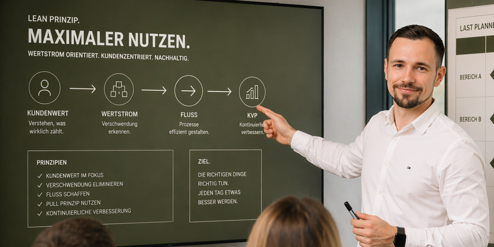
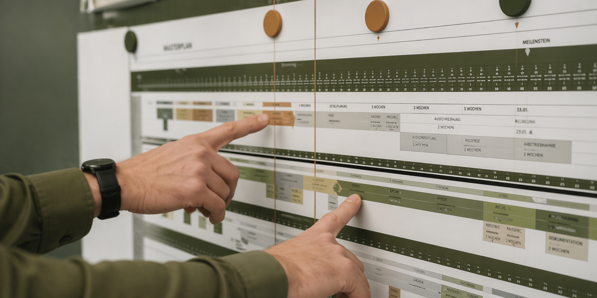

LEAN Construction
Einführung, Weiterentwicklung und praxisnahe Anwendung von LEAN-Prinzipien im Bau- und Infrastrukturumfeld.
Klarheit · Effizienz · Wertschöpfung
Ich bin Julian Wenger und positioniere mich mit just LEAN it auf LEAN Construction, Prozessoptimierung und Change Management im Bau- und Infrastrukturumfeld.
Wir machen Wertschöpfung im Bauprozess sichtbar. Für mehr Effizienz, weniger Verschwendung und nachhaltigen Projekterfolg.

„Mit LEAN Construction die Wertschöpfung in Ihrem Infrastrukturprojekt gezielt erhöhen.“

Dipl.-Ing. Julian Wenger, MBA
Über mich
Ich verbinde technisches Verständnis aus dem Infrastruktur- und Tunnelbau mit fundierter Ausbildung in Projekt-, Prozess- und Change Management.
Mit LEAN Construction und Baulogistik kontinuierlich Bauabläufe beschleunigen.
Ich bin Julian Wenger – LEAN Manager, Bauingenieur, Change Manager und Fachexperte im Tunnelbau- und Ingenieurtiefbau. Mein Ziel ist es, Bauprojekte effizienter, wertschöpfender und nachhaltiger zu gestalten.
Meine erste intensive berufliche Erfahrung mit der LEAN-Philosophie machte ich 2019 im Rahmen des North Yorkshire Polyhalite Project in Großbritannien.
Heute unterstütze ich die PORR Group aktiv bei der LEAN-Transformation und begleite Projekte in unterschiedlichen Bereichen.
Leistungen

Einführung, Weiterentwicklung und praxisnahe Anwendung von LEAN-Prinzipien im Bau- und Infrastrukturumfeld.
Analyse bestehender Abläufe, Identifikation von Engpässen und Entwicklung klarer Prozessstrukturen.
Begleitung von Veränderungsprozessen mit Fokus auf Akzeptanz, Kommunikation und nachhaltige Umsetzung.
Lösungen mit technischem Verständnis, operativem Praxisbezug und klarem Blick auf reale Projektbedingungen.
Umgesetzte LEAN Projekte

Ausbildung & Qualifikationen
Berufserfahrung
Kontakt
Name: Julian Wenger
Marke: just LEAN it
E-Mail: julianwenger1991@gmail.com
Telefon: +43 676 6603317
LinkedIn: linkedin.com/in/julian-wenger
Für Austausch, erste Gespräche oder zukünftige Zusammenarbeit im Bereich LEAN Construction für Infrastrukturprojekte.
E-Mail senden